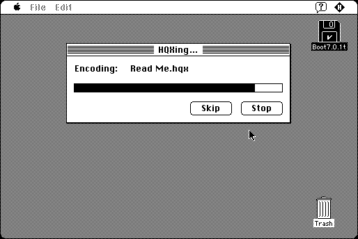

Download
hqxer.zip (41K) HQXer 1.1.0 repackaged into a zipped hfs disk image and checksum file. The disk image can be mounted with Mini vMac.
hqxer.sit.hqx (53K) HQXer 1.1.0 in the original format.
copyright: Jone Stiles
mod date: Nov 7, 1993
license: Freeware
last known url
(gone)
Can “decode and encode BinHex archives”. For System 6.0.7 or later. Actually, it appears to require System 7, at least on a Macintosh Plus.

If you find these downloads useful, please consider helping the Gryphel Project, which hosts them.
Here are the md5 checksums for the downloads, signed with Gryphel Key 5:
--------- GRY SIGNED TEXT --------- 36d2086b259bcd644dab255b3a43826f hqxer.zip 4fcda3a750519ed638ce57496fd10139 hqxer.sit.hqx ------- BEGIN GRY SIGNATURE ------- Gry/4Xa8CFcUzxdN/LBt2Dlv9/w4ASQqK4Klv+9+JkNA1QOMPOXVsf4tLcuq9II2 RxHYr/beOEFKHG8lpOyvgHWMHwVs6ayosyTNpKKxcpbZrrw7EOPo1TV3CVVGSy+C 1S0p5JQr0ci6XFRRde8gcEGQ3VO9cCvK0YeOSuIvGIiWzn9C3M+ngLhsEI4xmeUi -------- END GRY SIGNATURE --------